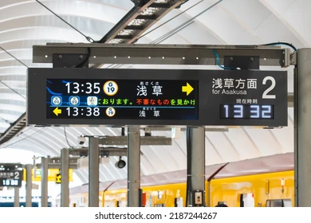
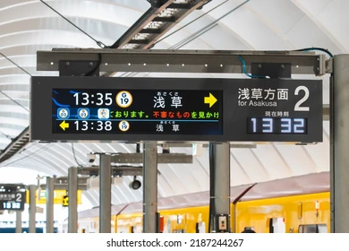

Opzoekwerk Treinborden & Informatie
In de eerste week kregen we een algemene introductie van het vak. We bespraken de doelstellingen en maakten kennis met de opdracht Lost in Tra(i)nslation. Ik leerde wat prototyping precies inhoudt binnen UX/UI en waarom het belangrijk is om ideeën snel zichtbaar te maken. Daarnaast kreeg ik een eerste kennismaking met Figma. Gelukkig heb ik dit vorig jaar ook al een beetje gezien tijdens mijn vak Web Software die ik nu heb moeten meenemen, dus ik heb al wat ervaring.
 



Wat heb ik gedaan?
In deze eerste week heb ik mijn eerste research rond de opdracht Lost in Tra(i)nslation vastgelegd. Ik ben van start gegaan door herkenbare treinborden te zoeken, zowel in België als in andere landen zoals Italië maar ook China en Japan.
Waarom? (tests, feedback, evaluatie)
Ik wilde vooral begrijpen hoe de ontwerpen van treinborden er over de hele wereld een beetje uit zien en waarom deze zo ingewikkeld zijn. Zodat ik met mijn design visueel aantrekkelijkere borden en een applicatie kan ontwerpen.
UX/UI-vragen die mijn beslissingen leidden
Ik stelde mezelf de volgende vragen:
- Wat is het doel van deze applicatie?
- Welke informatie heeft de gebruiker meteen nodig?
- Hoeveel schermen zijn er minimaal nodig om het idee duidelijk te maken?
Trade-offs
Ik koos ervoor om nog geen aandacht te besteden aan kleuren, typografie of detail, zodat ik niet te vroeg vast zou zitten aan visuele keuzes. De focus lag volledig op inzicht krijgen in het probleem en de opdracht.
Resultaten van snelle usability checks
Ik legde het basisidee mondeling uit aan mijn klasgenoot Aton om te checken of het concept begrijpelijk was. Zonder extra uitleg kon die persoon het doel van de applicatie grotendeels volgen, wat aangaf dat het idee duidelijk genoeg was voor een volgende stap.